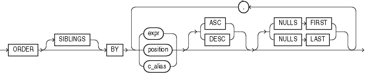

层次查询¶
语法¶
{kind=link}
Abstract
condition可以是任何条件。START WITH指定层次结构的根行。CONNECT BY指定父行和子行之间的关系。NOCYCLE参数指示 Oracle 数据库即使数据中存在CONNECT BY循环也返回行。将此参数与CONNECT_BY_ISCYCLE伪列一起使用, 以查看包含循环的行。- 在层次查询中,
condition中的一个表达式必须使用PRIOR运算符限定, 以引用父行。例如:
-
PRIOR是一元运算符, 与一元 + 和 - 算术运算符具有相同的优先级。它对层次查询中当前行的父行求值紧跟其后的表达式。PRIOR最常用于将列值与相等运算符进行比较。PRIOR关键字可以在运算符的任一侧，prior 在哪一侧，就是向哪一侧递归查询。
Oracle 处理层次查询¶
- 首先评估联接(如果存在), 无论联接是在
FROM子句中指定还是用WHERE子句谓词指定。 - 评估
CONNECT BY条件。 - 评估任何其余的
WHERE子句谓词。
形成层次结构的步骤
- Oracle 选择层次结构的根行, 即满足
START WITH条件的行。 - Oracle 选择每个根行的子行。每个子行必须满足与其中一个根行相关的
CONNECT BY条件。 - Oracle 选择后代子行的后续代。Oracle 首先选择步骤 [2] 中返回的行的子行, 然后是这些子行的子行, 依此类推。Oracle 始终通过评估与当前父行相关的
CONNECT BY条件来选择子行。 - 如果查询包含没有联接的
WHERE子句, 则 Oracle 从层次结构中删除不满足WHERE子句条件的所有行。Oracle 对每行单独评估此条件, 而不是删除不满足条件的行的所有子行。 - Oracle 以下图所示的顺序返回行。在图中, 子项出现在其父项下方。
{kind=link}
要查找父行的子行, Oracle 会对父行的 PRIOR 表达式进行求值, 并对表中的每一行求值 CONNECT BY 条件中的其他表达式。条件为真的行是父行的子行。CONNECT BY 条件可以包含其他条件来进一步过滤查询选择的行。
如果 CONNECT BY 条件导致层次结构中的循环, 则 Oracle 返回错误。如果一行既是另一行的父行(或祖父行或直接祖先)也是其子行(或孙行或直接后代), 则会发生循环。
Warning
在层次查询中, 指定 ORDER BY 或 GROUP BY 会覆盖 CONNECT BY 结果的层次顺序。如果要对具有相同父级的同级行进行排序, 请使用 ORDER SIBLINGS BY 子句。 (1)
- order_by_clause::= 
{kind=link}
示例¶
CONNECT BY 示例
使用 CONNECT BY 子句定义员工和管理者之间的关系:
select employee_id, last_name, manager_id
from employees
connect by prior employee_id = manager_id;
EMPLOYEE_ID LAST_NAME MANAGER_ID
----------- ------------------------- ----------
101 Kochhar 100
108 Greenberg 101
109 Faviet 108
110 Chen 108
111 Sciarra 108
112 Urman 108
113 Popp 108
200 Whalen 101
203 Mavris 101
204 Baer 101
. . .
LEVEL 示例¶
使用 LEVEL 伪列显示父行和子行:
select employee_id, last_name, manager_id, level
from employees
connect by prior employee_id = manager_id;
EMPLOYEE_ID LAST_NAME MANAGER_ID LEVEL
----------- ------------------------- ---------- ----------
101 Kochhar 100 1
108 Greenberg 101 2
109 Faviet 108 3
110 Chen 108 3
111 Sciarra 108 3
112 Urman 108 3
113 Popp 108 3
200 Whalen 101 2
203 Mavris 101 2
204 Baer 101 2
205 Higgins 101 2
206 Gietz 205 3
102 De Haan 100 1
START WITH 示例¶
添加 START WITH 子句以指定层次结构的根行, 并使用 SIBLINGS 关键字的 ORDER BY 子句在层次结构内保留排序:
select last_name, employee_id, manager_id, level
from employees
start with employee_id = 100
connect by prior employee_id = manager_id
order siblings by last_name;
LAST_NAME EMPLOYEE_ID MANAGER_ID LEVEL
------------------------- ----------- ---------- ----------
King 100 1
Cambrault 148 100 2
Bates 172 148 3
Bloom 169 148 3
Fox 170 148 3
Kumar 173 148 3
Ozer 168 148 3
Smith 171 148 3
De Haan 102 100 2
Hunold 103 102 3
Austin 105 103 4
Ernst 104 103 4
Lorentz 107 103 4
Pataballa 106 103 4
Errazuriz 147 100 2
Ande 166 147 3
Banda 167 147 3
在 hr.employees 表中, 员工 Steven King 是公司的负责人, 没有经理。他的员工中有 John Russell, Russell 是部门 80 的经理。如果将 Russell 设置为 King 的经理更新 employees 表, 将在数据中创建一个循环:
update employees
set manager_id = 145
where employee_id = 100;
select last_name "Employee"
, level
, sys_connect_by_path(last_name, '/') "Path"
from employees
where level <= 3 and department_id = 80
start with last_name = 'King'
connect by prior employee_id = manager_id and level <= 4;
ERROR:
ORA-01436: CONNECT BY loop in user data
CONNECT BY 条件中的 NOCYCLE 参数会导致 Oracle 尽管循环仍返回行。CONNECT_BY_ISCYCLE 伪列向您显示哪些行包含循环:
select last_name "Employee"
, connect_by_iscycle "Cycle"
, level
, sys_connect_by_path(last_name, '/') "Path"
from employees
where level <= 3 and department_id = 80
start with last_name = 'King'
connect by NOCYCLE prior employee_id = manager_id and level <= 4
order by "Employee", "Cycle", level, "Path";
Employee Cycle LEVEL Path
------------------------- ---------- ---------- -------------------------
Abel 0 3 /King/Zlotkey/Abel
Ande 0 3 /King/Errazuriz/Ande
Banda 0 3 /King/Errazuriz/Banda
Bates 0 3 /King/Cambrault/Bates
Bernstein 0 3 /King/Russell/Bernstein
Bloom 0 3 /King/Cambrault/Bloom
Cambrault 0 2 /King/Cambrault
Cambrault 0 3 /King/Russell/Cambrault
Doran 0 3 /King/Partners/Doran
Errazuriz 0 2 /King/Errazuriz
Fox 0 3 /King/Cambrault/Fox
...
CONNECT_BY_ISLEAF 示例¶
使用层次查询将列的值转换为逗号分隔列表:
select ltrim(sys_connect_by_path(warehouse_id,','),',')
from
(select rownum r, warehouse_id from warehouses)
where connect_by_isleaf = 1
start with r = 1
connect by r = prior r + 1
order by warehouse_id;
LTRIM(SYS_CONNECT_BY_PATH(WAREHOUSE_ID,','),',')
--------------------------------------------------------------------------------
1,2,3,4,5,6,7,8,9
CONNECT_BY_ROOT 示例¶
返回部门 110 中每个员工的姓、该员工在层次结构中高于其的最高级经理的姓、经理和员工之间的级别数, 以及它们之间的路径:
select last_name "Employee"
, connect_by_root last_name "Manager"
, level - 1 "Pathlen"
, sys_connect_by_path(last_name, '/') "Path"
from employees
where level > 1 and department_id = 110
connect by prior employee_id = manager_id
order by "Employee", "Manager", "Pathlen", "Path";
Employee Manager Pathlen Path
--------------- --------------- ---------- ------------------------------
Gietz Higgins 1 /Higgins/Gietz
Gietz King 3 /King/Kochhar/Higgins/Gietz
Gietz Kochhar 2 /Kochhar/Higgins/Gietz
Higgins King 2 /King/Kochhar/Higgins
Higgins Kochhar 1 /Kochhar/Higgins
使用 GROUP BY 子句返回部门 110 中每个员工及层次结构中高于该员工的所有员工的总薪水:
select name
, sum(salary) "Total_Salary"
from
(select connect_by_root last_name name
, Salary
from employees
where department_id = 110
connect by prior employee_id = manager_id)
group by name
order by name, "Total_Salary";
NAME Total_Salary
------------------------- ------------
Gietz 8300
Higgins 20300
King 20300
Kochhar 20300